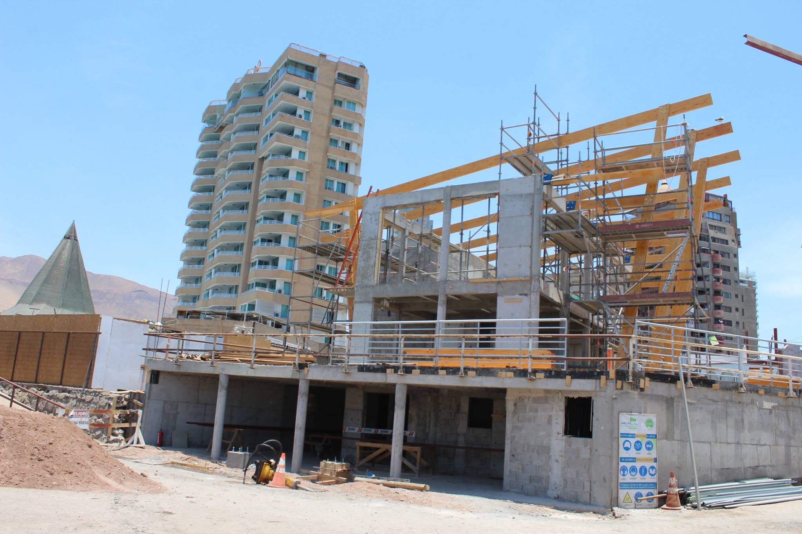
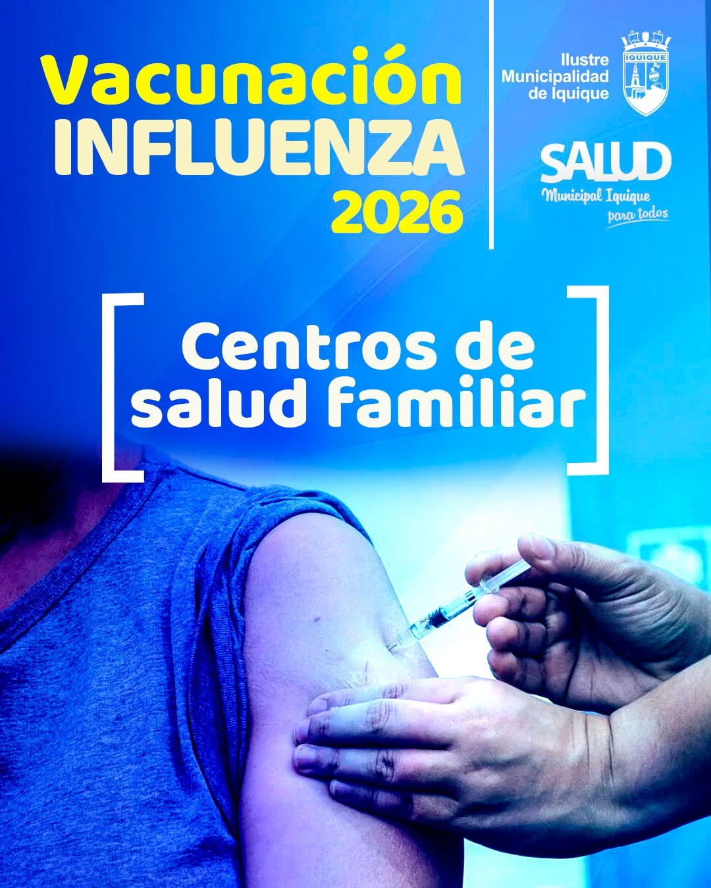
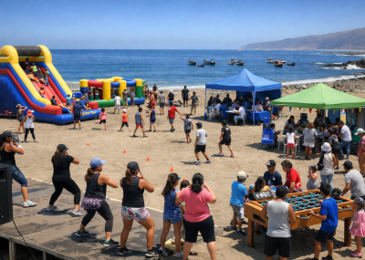
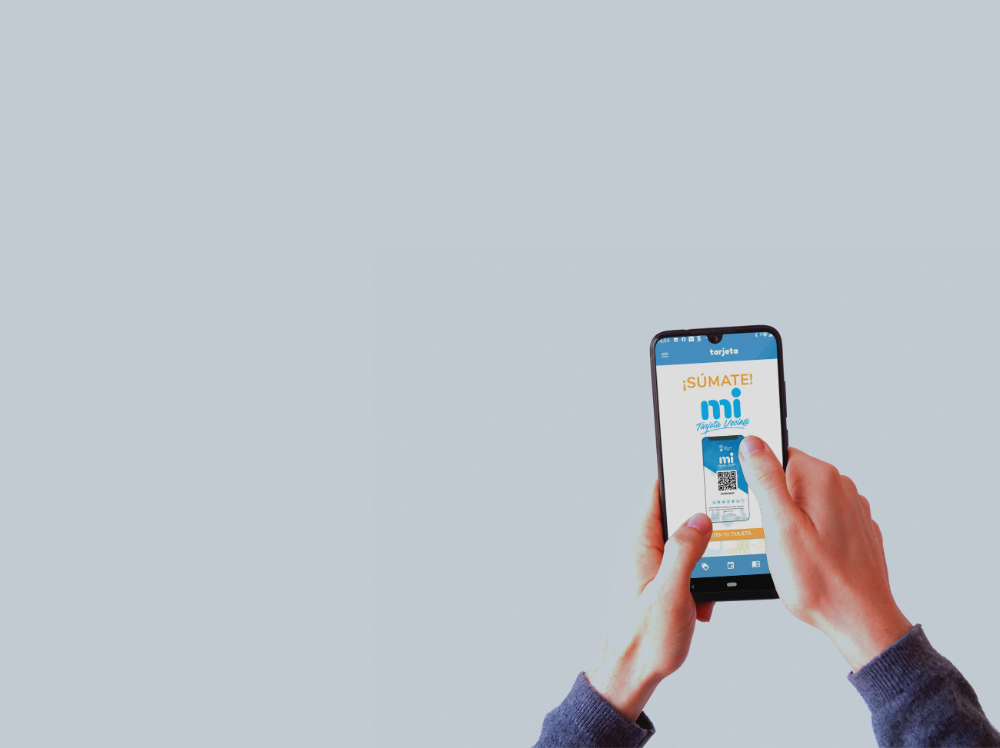

Tierra de Campeones
Tu municipio más cerca, digital y al servicio de la comunidad de Iquique.
Conoce tus trámitesTrámites y servicios municipales en línea para la comunidad de Iquique.
Pago online ágil, consulta de multas no empadronadas, traslado de comuna y descarga inmediata de duplicado oficial.
Agendamiento web para primera licencia, control psicotécnico, renovación de todas las clases y duplicados por extravío.
Calendarización de cuadrillas, retiro de enseres voluminosos, solicitud de tolvas para juntas vecinales y aseo urbano.
Pago semestral de patentes comerciales, industriales, profesionales y de alcoholes. Certificados tributarios digitales.
Actualización del Registro Social de Hogares (RSH), subsidio de agua potable, becas de educación superior y apoyo a familias.
Consulta de vademécum de remedios a precio de costo, reserva de medicamentos crónicos y proceso de inscripción vecinal.
Monitoreo permanente de más de 200 cámaras de alta resolución en el borde costero de Playa Brava, Cavancha y cuadrantes residenciales, en coordinación directa con Carabineros y Armada.
Atención farmacéutica nocturna obligatoria autorizada por la SEREMI de Salud de Tarapacá.
mapVivanco N° 820 con Tarapacá (Centro)
phoneTeléfono: (57) 242 1190

Obras PúblicasEl municipio completó la renovación de 14.000 metros cuadrados de senderos peatonales, iluminación LED sustentable con paneles solares y nuevo mobiliario con accesibilidad universal.
Leer noticia completa →
Salud MunicipalSalud Cormudesi habilita puntos móviles en plazas comunitarias y extiende los horarios de atención preventiva en los centros Cirujano Videla, Aguirre y Guzmán.
Leer noticia completa →
Cultura y DeporteTorneos abiertos de surf, voleibol playa y conciertos de artistas regionales reúnen a miles de familias iquiqueñas en Playa Brava durante todo el mes estival.
Leer noticia completa →Esta aplicación impulsa la innovación social dentro de la ciudad, fortaleciendo el comercio local, las actividades culturales y los servicios municipales.
Te invitamos a revisar los beneficios que la app tiene para ti.

Escríbenos directamente a la Oficina de Información, Reclamos y Sugerencias (OIRS). Te responderemos al correo que nos indiques.